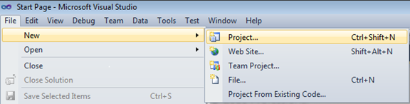
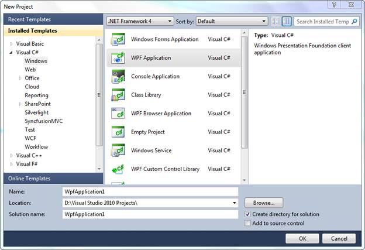

The following are steps to create a new WPF application in Visual Studio:
1. Open Visual Studio.
2. Click File tab and navigate to New > Project.

Figure 6: File tab
3. In the New Project dialog box, select WPF Application, enter a name for the application in the Name field and click OK.

Figure 7: New Project dialog box - WPF Application
4. Now, a new WPF application will be created.